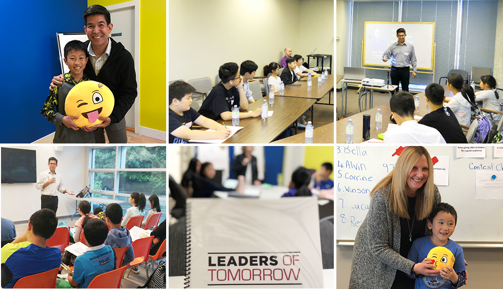
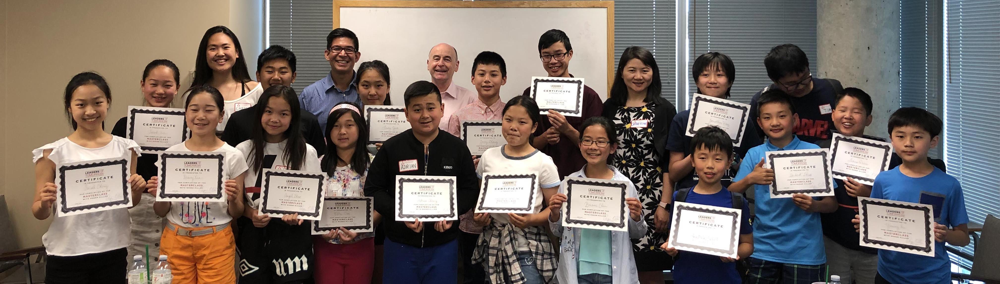
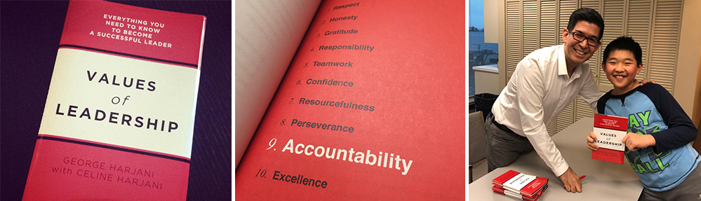

Leaders of Tomorrow is a professionally designed program dedicated to developing young people's leadership skills. Through time-tested concepts, tutorials, and instructors, we help young people not only overcome the fear and tension of public speaking, but improve effective communication and build confidence in interpersonal communication.
The Leaders of Tomorrow Program
The LOT program is a multifaceted approach that caters to students of all ages. We have three distinct courses: the Foundation course, the Leadership course and the Success course, that is being offered to students depending on their unique skills and abilities.
The Foundation course is targeted to students from 5 to 7 years old. It focuses on the most essential skills of making presentations, and helping them overcome their timidity.
The Leadership course is catered to primary school students, and is our most popular program. Our students learn the values of leadership and master the elements of public speaking and making impactful presentations. The course is undertaken in 10 levels, with each level taking 10 weeks of 90 minutes to complete. In each lesson, students are encouraged to craft a speech based on the lessons learned, and are given constructive feedback so they progress rapidly.
The Success course is our newest program that is designed for secondary school students. This program focuses on skills on how to craft spectacular presentations and how to make students masters of the stage.

All our programs are based on a 10-week session that coincides with the school term. The students receive textbooks where they can also make their notes and do their homework. At the end of a session, they are evaluated by their teachers, and are given a certificate of completion.
Leaders of Tomorrow also conducts periodic public speaking contests, in which high-performing students are encouraged to compete in. In addition, workshops that focus on particular leadership and speaking topics are also held, which are coached by world-class and champion public speakers.
George Harjani, the founder of the LOT program, has also published a book, along with his daughter, titled Values of Leadership, which can be purchased on Amazon.
Today’s world is a very competitive one, and we need to give our children the best education in preparing them for the future. Our program not only helps them be successful in school, it develops them to be responsible and compassionate leaders of tomorrow.
Give your child the boost she or he needs to succeed in the future. Enroll in the Leaders of Tomorrow program today!
Locations
- Vancouver
- West Vancouver
- White Rock
- Richmond
- Burnaby
- Coquitlam
Contact Us
Would you like to enrol in the Leaders of Tomorrow program?
Email George and let us know.